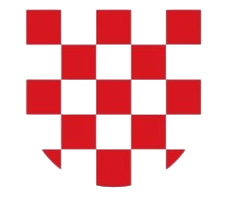

Sklekovi Ožujak 2026.

Drvena medalja
300 sklekova
Željezna medalja
1.000 sklekova
Brončana medalja
3.000 sklekova
Srebrna medalja
5.000 sklekova
Zlatna medalja
8.000 sklekova
Platina medalja
10.000 sklekova
Dijamantna medalja
11.000 sklekova
Okvirni savjeti za izazov i sklekove općenito
Forma
Sklek je jako jednostavan, ako tko ima dvojbe oko forme pogledajte ovo.
Upute za formuUkratko spustiti se na pod, ruke u ravnini ramena, skupiti noge, laktovi na 45 stupnjeva između tijela i ramena, stisnuti (zgrčiti) trbuh i tijelo da vam tijelo bude u ravnini kad se spuštate i to je to.
Kako izbjeći ozljede
Sklek je generalno jedna od najsigurnijih vježbi koje postoje, ali navest ću vam ovih par stvari koje možda primijetite i kako ih izbjeći ili riješiti ako se jave. Radimo puno sklekova tako da ipak nije loše pripaziti.
- Zglobovi na rukama - ovaj zglob je u skvrčenoj poziciji tijekom skleka i kad ih radite puno postoji mogućnost da zaboli. To spriječite tako da ga malo 5-10 sekundi prije svakog seta zagrijete okretanjem.
- Laktovi - znaju zaboljeti ako vam pozicija lakta prilikom izvedbe skleka nije 45 stupnjeva od tijela (nego ako ih recimo raširite skroz okomito u odnosu na tijelo). Znači pravilno je da lakat ne bude ni preblizu ravnini ramena ni preblizu donjem dijelu tijela nego negdje između. Lakat se isto može zagrijati na način da se vrti od podlaktice na dalje.
- Ramena - vjerojatno najizloženija kod sklekova. Dobro ih je malo zagrijati prije treninga, onim standardnim kolutima ramena naprijed i nazad par puta. Ako osjetite neku bol ili škljocanje odmorite, nemojte forsirati i to inače brzo i lako prođe.
- Donja leđa - ona vas mogu boljeti ako vam trbuh nije stisnut (zgrčen) dok radite sklek.
Neki savjeti za izazov koje bi vam dao i koji su mi pomogli da ga uspješno prođem prvi put
- Probavajte različite varijante sklekova (kad mijenjate raširenost ruke na podu mijenjate i to koji mišići najviše rade tijekom skleka, što je uže to više radi triceps, što je bliže širini ramena to više rade ramena, što je šire to više rade prsa i leđa) note - ruke na podu moraju biti u ravnini ramena, znači nejdu gore dolje, ali u širini im se smije mijenjati pozicija kako vam paše, znači mogu se širiti lijevo-desno
- Rasporedite si ih kroz dan kako vam najbolje paše (po istraživanjima koje sam čitao ovo čak maksimizira dobre rezultate treninga (snage i mišićne mase), znači ne samo da će vam tako biti lakše nego ćete imati i bolje tjelesne rezultate
- Gledajte kako vam tijelo reagira i tako si reorganizirajte trening (recimo ako imate cilj 3.000, možda će vam bolje odgovarati da radite 100 svaki dan, a možda da radite 200 svaki drugi s danom odmora između).
- Ako postane prelagano (a moglo bi jer ćete već za tjedan dana imati daleko bolju formu) slobodno se uhvatite i većeg izazova od prvog cilja koji ste postavili